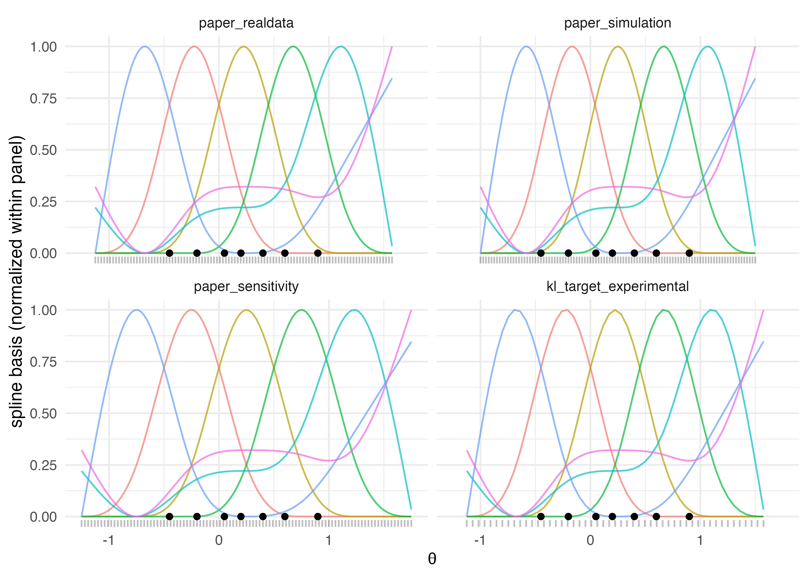

M4 · Grid construction and spline basis
Source:vignettes/m4-grid-and-basis.Rmd
m4-grid-and-basis.RmdScope of this vignette
M2 specified the log-spline prior on
and M3 composed that prior into the four-level random-effects hierarchy.
Both treated the discrete support
and the basis matrix
as given. M4 fixes them: it defines the four grid recipes that
make_efron_grid() exposes, specifies how each recipe sets
the support endpoints and the grid density, and documents the
natural-cubic-spline basis built on the resulting support. The applied
counterpart A4 walks through the same recipes with worked output and a
decision tree; M4 supplies the formal specification on which that
decision tree rests.
Notation reminder
The notation is unchanged from M1–M3. is the number of sites; and are the per-site point estimate and within-study standard error; is the latent effect; is the discrete mixing distribution on the support points ; is the natural-cubic-spline basis matrix evaluated at the grid; and is the spline dimension. Two recipes additionally consume an oracle vector ; it exists only inside simulation studies.
What the grid is
The grid is the finite, strictly increasing tuple
on which the discretised mixing distribution
lives. Every Bayesian computation downstream of
make_efron_grid() treats
as a probability mass on these
points: the per-iteration softmax of M2 normalises
over
;
the per-site mixture likelihood of M3 sums over
;
the posterior summaries of
are computed component-wise on the same support. The grid is the carrier
of the inferential object.
Two design choices govern it. The first is the support endpoints
and
,
which fix the interval on which
can place mass. The second is the spacing: at fixed endpoints, a denser
grid produces a finer Riemann-sum approximation of integrals against
and more locations at which the spline basis can resolve curvature. The
four recipes below differ in how they set the endpoints and, in one
case, in how they set the density. None changes the spline dimension
,
which is a separate argument with default
and admissible range
.
The recipes are indexed by the grid_method argument:
"paper_realdata" (default),
"paper_simulation", "paper_sensitivity", and
"kl_target_experimental". The closed set is the central
commitment of the grid module; no fifth recipe is admitted at v0.1.
Recipe 1: paper_realdata
The default recipe sets the endpoints from the observed range of
and the density to a user-controlled equispaced count. Let
and let
be the expansion
argument. The endpoints are
and the support is the equispaced
sequence
The package defaults are
(50% expansion on each side) and
.
The recipe maps to
seq(from = min(theta_hat) - e * W, to = max(theta_hat) + e * W, length.out = L)
in R/grid.R.
Three properties distinguish the recipe. It is the only one that does not require an oracle: only and the precondition are needed. The expansion factor is range-relative, which makes the pad data-adaptive — a panel with gets a default pad of on each side; one with gets . And the support is exactly equispaced: the spacing is constant across , which is the input the spline-basis construction assumes.
This is the rule the package’s reference paper uses for its real-data
analysis. The attribution slot records the formula tag
"paper_realdata_seq" and the source line range in the
replication scripts.
Recipe 2: paper_simulation
The simulation recipe is oracle-aware: it reads the oracle vector and sets the endpoints by an absolute pad rather than a range-relative factor. Let and denote the oracle extremes. The endpoints are and the support is again equispaced of length (default ). The constant is in units of and is independent of the width of the oracle range.
The mathematical motivation is direct. In a simulation the data-generating mechanism is known, so the true latent effects are available and the grid can be constructed to cover the truth exactly, without inferring its extent from the noisy estimates. The observed range of may under- or over-cover the oracle range — under-coverage is the norm at small — and using the oracle range removes that source of mis-specification.
The fixed absolute pad of
is a byte-identity choice with the paper’s simulation rule. The
expansion slot returned in the result list is consequently
NA_real_, signalling that this recipe does not consume a
range-relative factor. Calling the recipe with
theta_true = NULL raises the typed condition
bef_err_grid_oracle_required; the package refuses to fall
back silently because the two regimes encode different scientific claims
about the support of
.
The attribution slot records the formula tag
"paper_simulation_absolute".
Recipe 3: paper_sensitivity
The sensitivity recipe is also oracle-aware but uses a range-relative
pad parameterised by bound_expansion, which is the sweep
parameter. Let
denote
the width of the oracle range and let
be the bound_expansion argument (default
).
The endpoints are
with an equispaced support of length
(default
).
The recipe’s role is to support sensitivity sweeps over the support width. Varying across a small set — for instance, — produces a family of grids that share the same data and oracle but differ in the margin placed around the true effects. Posterior summaries that move materially across the sweep indicate that the choice of endpoints is doing inferential work; summaries that are stable indicate that the inference is insensitive to the support width. A6 walks through the sweep end to end.
Like paper_simulation, the recipe is oracle-gated:
calling it without theta_true raises
bef_err_grid_oracle_required. The expansion
slot reports the effective value of
because the formula is genuinely range-relative; the attribution slot
records the tag "paper_sensitivity_relative". The
lower-open bound
excludes the degenerate width-zero grid.
Recipe 4: kl_target_experimental
The fourth recipe inherits its endpoints from the
paper_realdata-style observed-range expansion but derives
the grid density from a Kullback–Leibler target. Let
and
be as in Recipe 1 and define
and
.
Let
be the kappa
argument, with default
.
The recipe sets the grid spacing
by
and the grid length by
, clipped to
.
The support is equispaced at the chosen length, so the realised spacing
is
rather than exactly
when clipping is active.
The calibration is the package’s adopted experimental translation of
the ebnm homoscedastic spacing rule, not a validated
heteroscedastic theorem. Introduced as heuristic motivation: under a
homoscedastic-
Gaussian mixture, the maximum KL divergence between adjacent grid
components — bounded by
— translates into a maximum spacing
via the identity
followed by exponentiation of the bound. The factor of two reflects
two-sided coverage of adjacent components;
ensures the spacing is fine enough for the most precise observation.
This heuristic carries no theorem when applied to heteroscedastic
inputs.
The recipe assumes homoscedastic observations.
bayesEfron accepts heteroscedastic inputs in general, and
the KL calibration on such inputs is not validated against any published
number. The package therefore emits a once-per-session disclaimer the
first time the recipe is called in a given R session, and is silent on
subsequent calls. The disclaimer is part of the recipe’s contract. The
attribution slot records the formula in software-prose form,
d = 2 * min(sigma) * sqrt(exp(2 * kappa) - 1), with a
citation to ebnm::ebnm_scale_npmle().
The natural-cubic-spline basis
Given the support
and the spline dimension
,
the basis matrix is constructed as
where
is the natural-cubic-spline basis constructor of the base R
splines package. The rows of
index grid points and the columns index basis functions; the
entry is the value of the
-th
basis function at
.
A natural cubic spline on a finite set of knots is a piecewise-cubic function that is twice continuously differentiable across all knots and linear in beyond the boundary knots (Hastie, Tibshirani & Friedman, 2009, The Elements of Statistical Learning). Boundary linearity is the defining feature of “natural” splines: it controls extrapolation by extending the basis functions as straight lines beyond the boundary knots, avoiding the boundary blow-ups that unrestricted cubic splines exhibit. In the present context the support endpoints and are themselves the boundary knots, so the restriction acts at the grid endpoints and stabilises the basis there.
Knot placement is delegated to splines::ns(). With
df = M and intercept = FALSE, the constructor
places two boundary knots at the extremes of the input vector and
interior knots at its equispaced quantiles. Because the input is the
grid
itself rather than the raw data
,
the interior-knot quantiles are computed on the equispaced support. This
decouples the basis shape from the data distribution at fixed
and
:
two datasets producing the same grid endpoints produce the same basis
matrix
.
The intercept = FALSE choice removes the constant column
from the basis. The motivation is the identifiability discipline of M2:
the softmax of
is invariant to the shift
, so any
direction of
producing a multiple of
in
leaves
unchanged and renders
unidentified along that direction. Omitting the constant column removes
this degeneracy at construction. The complementary runtime guard is the
postcondition discussed next.
The augmented-rank postcondition
Omitting the constant column from
does not automatically guarantee that
for every admissible
pair and grid configuration. A pathological combination — a grid with
near-duplicate support points, or an
too large relative to
— can in principle produce a
whose columns happen to span the constant direction. The package
therefore enforces a rank postcondition at the bottom of every
successful return of make_efron_grid():
The check is implemented as
qr(cbind(1, B), tol = sqrt(.Machine$double.eps))$rank == M + 1L
and, on failure, raises the typed condition
bef_grid_rank_deficient before any Stan compilation occurs.
The augmented form
jointly tests that
is full column rank and that
; a rank below
implies at least one of the two failure modes. Three further
postconditions accompany the rank check: strict monotonicity of the
support,
, and non-emptiness of the
attribution sub-list, which carries
attribution$formula (the recipe-specific tag) and
attribution$source (the file:line citation
back to the published replication scripts or to
ebnm::ebnm_scale_npmle() in the KL-target case).
A side-by-side figure
The four grids are constructed on a shared seven-site dataset and shown in a 2 × 2 layout. The basis columns are normalised to a common vertical range within each panel so the visual comparison is dominated by the support rather than by the absolute scale of the basis amplitudes.
theta_hat <- c(-0.45, -0.20, 0.05, 0.20, 0.40, 0.60, 0.90)
sigma <- c( 0.18, 0.22, 0.20, 0.16, 0.19, 0.24, 0.21)
theta_true <- c(-0.50, -0.10, 0.00, 0.25, 0.45, 0.70, 1.00)
g_real <- make_efron_grid(
theta_hat = theta_hat,
sigma = sigma,
grid_method = "paper_realdata"
)
g_sim <- make_efron_grid(
theta_hat = theta_hat,
sigma = sigma,
theta_true = theta_true,
grid_method = "paper_simulation"
)
g_sens <- make_efron_grid(
theta_hat = theta_hat,
sigma = sigma,
theta_true = theta_true,
grid_method = "paper_sensitivity",
bound_expansion = 0.5
)
g_kl <- suppressMessages(
make_efron_grid(
theta_hat = theta_hat,
sigma = sigma,
grid_method = "kl_target_experimental"
)
)
grid_long <- function(g, recipe) {
B_norm <- apply(g$B, 2, function(col) {
rng <- range(col)
if (diff(rng) <= 0) col else (col - rng[1]) / diff(rng)
})
data.frame(
recipe = recipe,
x = rep(g$grid, ncol(B_norm)),
y = as.numeric(B_norm),
basis = factor(rep(seq_len(ncol(B_norm)), each = length(g$grid)))
)
}
basis_all <- rbind(
grid_long(g_real, "paper_realdata"),
grid_long(g_sim, "paper_simulation"),
grid_long(g_sens, "paper_sensitivity"),
grid_long(g_kl, "kl_target_experimental")
)
basis_all$recipe <- factor(
basis_all$recipe,
levels = c(
"paper_realdata", "paper_simulation",
"paper_sensitivity", "kl_target_experimental"
)
)
rug_all <- rbind(
data.frame(recipe = "paper_realdata", x = g_real$grid),
data.frame(recipe = "paper_simulation", x = g_sim$grid),
data.frame(recipe = "paper_sensitivity", x = g_sens$grid),
data.frame(recipe = "kl_target_experimental", x = g_kl$grid)
)
rug_all$recipe <- factor(rug_all$recipe, levels = levels(basis_all$recipe))
obs_all <- do.call(rbind, lapply(
levels(basis_all$recipe),
function(r) data.frame(recipe = r, x = theta_hat, y = 0)
))
obs_all$recipe <- factor(obs_all$recipe, levels = levels(basis_all$recipe))
ggplot2::ggplot() +
ggplot2::geom_line(
data = basis_all,
ggplot2::aes(x = x, y = y, colour = basis),
alpha = 0.7
) +
ggplot2::geom_rug(
data = rug_all,
ggplot2::aes(x = x), sides = "b", alpha = 0.25
) +
ggplot2::geom_point(
data = obs_all,
ggplot2::aes(x = x, y = y), colour = "black", size = 1.5
) +
ggplot2::facet_wrap(~ recipe, ncol = 2) +
ggplot2::labs(
x = expression(theta),
y = "spline basis (normalized within panel)"
) +
ggplot2::guides(colour = "none") +
ggplot2::theme_minimal()
Four grid recipes on a shared seven-site dataset. The rug shows the support points, black markers show the seven observed theta_hat values, and coloured curves show the natural-cubic-spline basis (normalised within panel).
Three formula-driven patterns are visible. The
paper_realdata and kl_target_experimental
panels share endpoints because both read the observed range and apply
the same default 50% expansion; they differ only in the density of the
rug, which reflects the KL-target’s derivation of
from
.
The paper_simulation and paper_sensitivity
panels both read the oracle range, but the simulation rule pads by an
absolute
on each side while the sensitivity rule pads by a fraction of the oracle
width. The basis-curve shape is governed entirely by the endpoints,
,
and
:
panels with identical endpoints and identical
produce identical basis matrices, which is the visible consequence of
the data-decoupled interior-knot placement above.
Reading map
This vignette specified the support and the basis. The remaining methodological vignettes carry the grid into implementation and verification.
-
M5 — Stan model and cache. The byte-locked source
inst/stan/efron_re.stan, the numerical-stability disciplines (log_softmax,log_sum_exp, max-shift normalisation, two-pass variance) the source obeys when consuming and , and the two-tier cache whose key includes the SHA-256 of the LOCKEDR/grid.R. - M6 — Verification and calibration. End-to-end coverage verification on the locked Lee–Sui benchmark fixtures, the release-blocking acceptance band on the per-site replicate intervals, and byte-identity tests on the three replication-faithful recipes.
A reader who has followed M1–M4 has the complete model specification in hand. The applied vignette A4 supplies the corresponding decision tree for choosing a recipe in a given analytic setting.